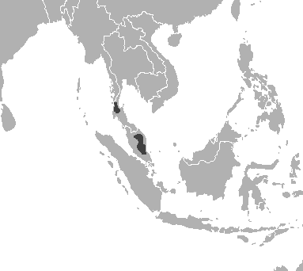
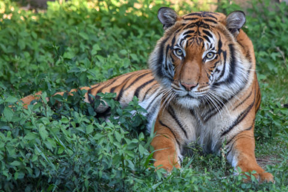

Malayan Tiger
Description
The Malayan Tiger, similar to other tigers, is orange with unique black stripes for camouflage, and various white spots. They are around 2.3-2.6m and are between 100-120kg. They are extremely strong and their fur allows them to hide in the forests where they live.
Habitat and Geography

The Malayan Tiger is a nearly extinct subspecies of tiger located only in Malaysia, which is in south-east Asia. It is estimated that there are only 80-120 mature individuals left in the wild. Their taxonomy is Animalia, chordata, mammalia, carnivora, felidae, panthera. The subspecies only lives in Malaysia and Thailand and in small pockets around the country. Their habitats include abandoned agricultural land, small forests, and secondary vegetation.
Biology
Their diet includes wild boar, deer, bearded pigs, sun bears, and others.
They communicate using various sounds, chuffs, roars, &c, as well as through scents through urine or feces. They are territorial and solitary. From November to March, Malayan Tigers begin to mate and females will leave scent marks to signal availability. Female tigers will give birth to two to four cubs but less than half will survive to maturity.
Media
